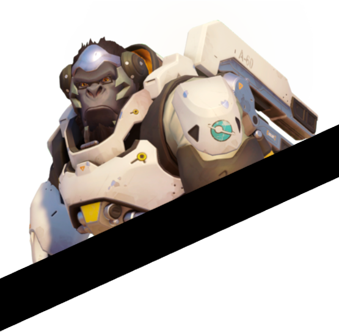

|
Welcome to the Overwatch Community Cup! The OWCC is a small, improvement-based league for players ranked below diamond. We're a fan league with no official connection to Blizzard. The current season runs from October to December, and playoffs will be in January.
Want to get involved? Watch some matches and appreciate some great Overwatch. Pick a team to cheer for and keep up with the scoreboard. You can volunteer as a referee, coach or analyst - or even join one of our teams!
Lower-level Overwatch can be incredibly fun to spectate; the meta is more flexible, the winners are less predictable, and the gameplay can be easier to follow. Our games are streamed by a variety of up-and-coming casters who commentate them live.

|